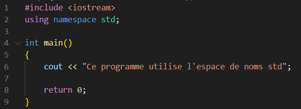
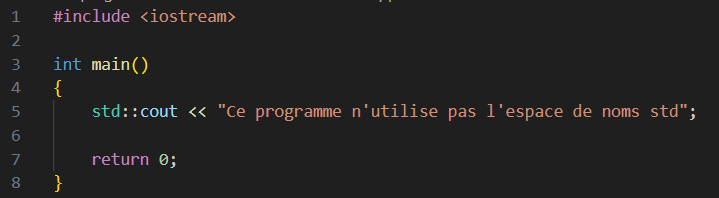
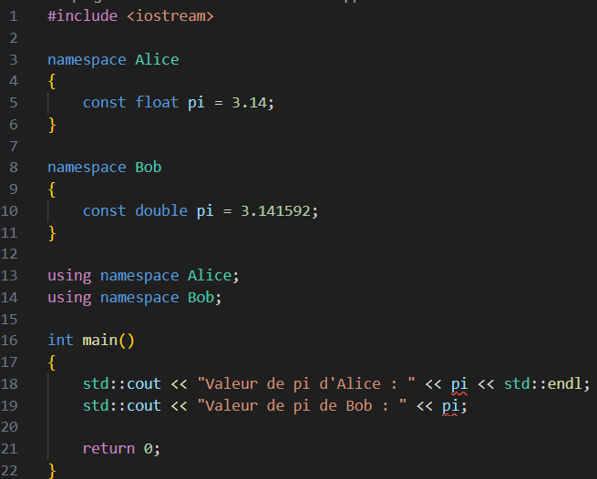

<!DOCTYPE html>
<html lang="en">
  <head>
    <meta charset="utf-8" />
    <meta name="viewport" content="width=device-width, initial-scale=1.0, maximum-scale=1.0, user-scalable=no" />

    <title></title>
    <link rel="stylesheet" href="../assets/dist/reveal.css" />
    <link rel="stylesheet" href="../assets/dist/theme/white.css" id="theme" />
    <link rel="stylesheet" href="../assets/css/vs2015.css" />
	<link rel="stylesheet" href="../assets/css/layout.css" />
	<link rel="stylesheet" href="../assets/plugin/customcontrols/style.css">
	<link rel="stylesheet" href="../assets/plugin/chalkboard/style.css">


    <script defer src="../assets/dist/fontawesome/all.min.js"></script>

	<script type="text/javascript">
		var forgetPop = true;
		function onPopState(event) {
			if(forgetPop){
				forgetPop = false;
			} else {
				parent.postMessage(event.target.location.href, "app://obsidian.md");
			}
        }
		window.onpopstate = onPopState;
		window.onmessage = event => {
			if(event.data == "reload"){
				window.document.location.reload();
			}
			forgetPop = true;
		}

		function fitElements(){
			const itemsToFit = document.getElementsByClassName('fitText');
			for (const item in itemsToFit) {
				if (Object.hasOwnProperty.call(itemsToFit, item)) {
					var element = itemsToFit[item];
					fitElement(element,1, 1000);
					element.classList.remove('fitText');
				}
			}
		}

		function fitElement(element, start, end){

			let size = (end + start) / 2;
			element.style.fontSize = `${size}px`;

			if(Math.abs(start - end) < 1){
				while(element.scrollHeight > element.offsetHeight){
					size--;
					element.style.fontSize = `${size}px`;
				}
				return;
			}

			if(element.scrollHeight > element.offsetHeight){
				fitElement(element, start, size);
			} else {
				fitElement(element, size, end);
			}		
		}


		document.onreadystatechange = () => {
			fitElements();
			if (document.readyState === 'complete') {
				if (window.location.href.indexOf("?export") != -1){
					parent.postMessage(event.target.location.href, "app://obsidian.md");
				}
				if (window.location.href.indexOf("print-pdf") != -1){
					let stateCheck = setInterval(() => {
						clearInterval(stateCheck);
						window.print();
					}, 250);
				}
			}
	};

    var exo = `#include <iostream>

class Joueur
{
    float vie;
    float attaque;

public:
    Joueur(float Vie, float Attaque);

    float getVie();
    float getAttaque();

    void setVie(float Vie);
    void setAttaque(float Attaque);
};

float Joueur::getVie()
{
    return vie;
}

float Joueur::getAttaque()
{
    return attaque;
}

void Joueur::setVie(float Vie)
{
    vie = Vie;
}

void Joueur::setAttaque(float Attaque)
{
    attaque = Attaque;
}

int main()
{    
    Joueur* joueur;

    cout << "PV : " << joueur->getVie() << endl;
    cout << "Attaque : " << joueur->getAttaque();
    
    return 0;
}`;
	var programme8 = ``;
	var programme7 = ``;
	var programme6 = `#include <iostream>

class Joueur
{
    float vie;
    float attaque;

public:
    Joueur(float Vie, float Attaque);

    float getVie();
    float getAttaque();

    void setVie(float Vie);
    void setAttaque(float Attaque);
};

Joueur::Joueur(float Vie, float Attaque)
{
    vie = Vie;
    attaque = Attaque;
}

float Joueur::getVie()
{
    return vie;
}

float Joueur::getAttaque()
{
    return attaque;
}

void Joueur::setVie(float Vie)
{
    vie = Vie;
}

void Joueur::setAttaque(float Attaque)
{
    attaque = Attaque;
}

int main()
{    
    Joueur* joueur = new Joueur(42.0, 4.2);

    std::cout << "PV : " << joueur->getVie() << std::endl;
    std::cout << "Attaque : " << joueur->getAttaque();
    
    return 0;
}`;
    var programme5 = `#include <iostream>
#include <memory>

class T
{
public:
    void message();
};

void T::message()
{
    std::cout << "Message depuis un objet de la classe T" << std::endl;
}

int main()
{
    std::unique_ptr<T> ptr = std::make_unique<T>();
    ptr->message();

    std::cout << ptr.get() << std::endl;
    
    std::unique_ptr<T> copie = std::move(ptr);
    copie->message();

    if (ptr.get() == nullptr)
    {
        std::cout << "ptr est un nullptr" << std::endl;
    }

    std::cout << ptr.get() << std::endl;
    std::cout << copie.get() << std::endl;

    // Génère une erreur de compilation
    //std::unique_ptr<T> copie = ptr;

    return 0;
}`;
	var programme4 = `#include <iostream>

namespace Alice
{
    const float pi = 3.14;
}

namespace Bob
{
    const double pi = 3.141592;
}

using namespace Alice;
using namespace Bob;

int main()
{
    std::cout << "Valeur de pi d'Alice : " << pi << std::endl;
    std::cout << "Valeur de pi de Bob : " << pi;

    return 0;
}`;
	var programme3 = `#include <iostream>

namespace Alice
{
    const float pi = 3.14;
}

namespace Bob
{
    const double pi = 3.141592;
}

int main()
{
    std::cout << "Valeur de pi d'Alice : " << Alice::pi << std::endl;
    std::cout << "Valeur de pi de Bob : " << Bob::pi;

    return 0;
}`;
    var programme2 = `#include <iostream>

int main()
{
    std::cout << "Ce programme n'utilise pas l'espace de noms std";

    return 0;
}`;
    var programme1 = `#include <iostream>
using namespace std;

int main()
{
    cout << "Ce programme utilise l'espace de noms std";

    return 0;
}`;

        </script>
  </head>
  <body>
    <div class="reveal">
      <div class="slides"><section  data-markdown><script type="text/template"><!-- .slide: class="drop" -->
<div class="" style="position: absolute; left: 0px; top: 0px; height: 700px; width: 960px; min-height: 700px; display: flex; flex-direction: column; align-items: center; justify-content: center" absolute="true">

<style> .reveal {  font-size: 180%; line-height: 170%; } .reveal p {font-size:80%;} .reveal code {font-size:120%}</style>
# Séance 6
## Espaces de noms, utiliser une documentation et résoudre les erreurs classiques
</div></script></section><section  data-markdown><script type="text/template"><!-- .slide: class="drop" -->
<div class="" style="position: absolute; left: 0px; top: 0px; height: 700px; width: 960px; min-height: 700px; display: flex; flex-direction: column; align-items: center; justify-content: center" absolute="true">

## La dernière fois...

- &shy;<!-- .element: class="fragment" data-fragment-index="1" --> Les classes
- &shy;<!-- .element: class="fragment" data-fragment-index="2" --> L'encapsulation
- &shy;<!-- .element: class="fragment" data-fragment-index="3" --> Les fichiers .h et .cpp
- &shy;<!-- .element: class="fragment" data-fragment-index="4" --> L'héritage

</div></script></section><section  data-markdown><script type="text/template"><!-- .slide: class="drop" -->
<div class="" style="position: absolute; left: 0px; top: 0px; height: 700px; width: 960px; min-height: 700px; display: flex; flex-direction: column; align-items: center; justify-content: center" absolute="true">

# Les espaces de noms

</div></script></section><section  data-markdown><script type="text/template"><!-- .slide: class="drop" -->
<div class="" style="position: absolute; left: 0px; top: 0px; height: 700px; width: 960px; min-height: 700px; display: flex; flex-direction: column; align-items: center; justify-content: center" absolute="true">

## Les espaces de noms ou `namespace`
- &shy;<!-- .element: class="fragment" data-fragment-index="1" --> Rassembler des variables, des fonctions et des classes faisant partie d'un même projet
	- &shy;<!-- .element: class="fragment" data-fragment-index="2" --> Séparer différents projets pour éviter des doublons


</div></script></section><section  data-markdown><script type="text/template"><!-- .slide: class="drop" -->
<div class="" style="position: absolute; left: 0px; top: 0px; height: 700px; width: 960px; min-height: 700px; display: flex; flex-direction: column; align-items: center; justify-content: center" absolute="true">

## Utiliser un espace de nom



- Supprime l'avantage de l'espace de nom

</div></script></section><section  data-markdown><script type="text/template"><!-- .slide: class="drop" -->
<div class="" style="position: absolute; left: 0px; top: 0px; height: 700px; width: 960px; min-height: 700px; display: flex; flex-direction: column; align-items: center; justify-content: center" absolute="true">

## Utiliser le contenu d'un espace de nom sans `using`



- Opérateur résolution de portée pour accéder aux éléments
- Plus long à écrire

</div></script></section><section  data-markdown><script type="text/template"><!-- .slide: class="drop" -->
<div class="" style="position: absolute; left: 0px; top: 0px; height: 700px; width: 960px; min-height: 700px; display: flex; flex-direction: column; align-items: center; justify-content: center" absolute="true">

## Créer un espace de noms


- Il est possible de le faire dans plusieurs fichiers !

</div></script></section><section  data-markdown><script type="text/template"><!-- .slide: class="drop" -->
<div class="" style="position: absolute; left: 0px; top: 0px; height: 700px; width: 960px; min-height: 700px; display: flex; flex-direction: column; align-items: center; justify-content: center" absolute="true">

## L'intérêt des espaces de noms


- Quelle définition choisir ?
- Il ne faut pas utiliser `using`

</div></script></section><section  data-markdown><script type="text/template"><!-- .slide: class="drop" -->
<div class="" style="position: absolute; left: 0px; top: 0px; height: 700px; width: 960px; min-height: 700px; display: flex; flex-direction: column; align-items: center; justify-content: center" absolute="true">

## Exercice : mettre le projet PID (sauf `main.cpp`) dans un espace de noms et modifier `main.cpp` pour faire les tests sans utiliser `using`

</div></script></section><section  data-markdown><script type="text/template"><!-- .slide: class="drop" -->
<div class="" style="position: absolute; left: 0px; top: 0px; height: 700px; width: 960px; min-height: 700px; display: flex; flex-direction: column; align-items: center; justify-content: center" absolute="true">

## Solution :

</div></script></section><section  data-markdown><script type="text/template"><!-- .slide: class="drop" -->
<div class="" style="position: absolute; left: 0px; top: 0px; height: 700px; width: 960px; min-height: 700px; display: flex; flex-direction: column; align-items: center; justify-content: center" absolute="true">

## Utiliser une documentation

- Le manuel ne couvre pas tout
- Chercher sur Internet
	- Écrire en anglais pour de meilleurs résultats
- StackOverflow, ChiefDelphi... sont de très bons forums pour des questions spécifiques
- CppReference, W3School... sont de très bonnes documentations


</div></script></section><section  data-markdown><script type="text/template"><!-- .slide: class="drop" -->
<div class="" style="position: absolute; left: 0px; top: 0px; height: 700px; width: 960px; min-height: 700px; display: flex; flex-direction: column; align-items: center; justify-content: center" absolute="true">

## Exercice : afficher la date et l'heure

</div></script></section><section  data-markdown><script type="text/template"><!-- .slide: class="drop" -->
<div class="" style="position: absolute; left: 0px; top: 0px; height: 700px; width: 960px; min-height: 700px; display: flex; flex-direction: column; align-items: center; justify-content: center" absolute="true">

## Solution : chercher sur Internet

</div></script></section><section  data-markdown><script type="text/template"><!-- .slide: class="drop" -->
<div class="" style="position: absolute; left: 0px; top: 0px; height: 700px; width: 960px; min-height: 700px; display: flex; flex-direction: column; align-items: center; justify-content: center" absolute="true">

## Exercice : faire un programme simple montrant l'utilité d'un `unique_ptr` (*smart pointer*). Aller sur CppRefenrence pour faire la recherche.

</div></script></section><section  data-markdown><script type="text/template"><!-- .slide: class="drop" -->
<div class="" style="position: absolute; left: 0px; top: 0px; height: 700px; width: 960px; min-height: 700px; display: flex; flex-direction: column; align-items: center; justify-content: center" absolute="true">

## Solution :


</div></script></section><section  data-markdown><script type="text/template"><!-- .slide: class="drop" -->
<div class="" style="position: absolute; left: 0px; top: 0px; height: 700px; width: 960px; min-height: 700px; display: flex; flex-direction: column; align-items: center; justify-content: center" absolute="true">

# Résoudre les erreurs classiques


</div></script></section><section  data-markdown><script type="text/template"><!-- .slide: class="drop" -->
<div class="" style="position: absolute; left: 0px; top: 0px; height: 700px; width: 960px; min-height: 700px; display: flex; flex-direction: column; align-items: center; justify-content: center" absolute="true">

## Les erreurs classiques

- &shy;<!-- .element: class="fragment" data-fragment-index="1" --> Pointeurs non alloué
- &shy;<!-- .element: class="fragment" data-fragment-index="2" --> Méthode non définie (ou vous penser l'avoir fait mais le nom / les arguments sont incorects)
- &shy;<!-- .element: class="fragment" data-fragment-index="3" --> La syntaxe n'est pas bonne
- &shy;<!-- .element: class="fragment" data-fragment-index="4" --> Il manque une inclusion


</div></script></section><section  data-markdown><script type="text/template"><!-- .slide: class="drop" -->
<div class="" style="position: absolute; left: 0px; top: 0px; height: 700px; width: 960px; min-height: 700px; display: flex; flex-direction: column; align-items: center; justify-content: center" absolute="true">

## Résoudre les erreurs classiques

- &shy;<!-- .element: class="fragment" data-fragment-index="1" --> Lire les logs
	- &shy;<!-- .element: class="fragment" data-fragment-index="2" --> Modifier la (les) ligne(s) problématique(s)
- &shy;<!-- .element: class="fragment" data-fragment-index="3" --> Vérifier que les pointeurs sont tous alloués
- &shy;<!-- .element: class="fragment" data-fragment-index="4" --> Mettre du code en commentaires

</div></script></section><section  data-markdown><script type="text/template"><!-- .slide: class="drop" -->
<div class="" style="position: absolute; left: 0px; top: 0px; height: 700px; width: 960px; min-height: 700px; display: flex; flex-direction: column; align-items: center; justify-content: center" absolute="true">

## Exemple : corrigez toutes les erreurs du programme ci-dessous

<button onclick = "navigator.clipboard.writeText(exo)">Programme</button>


</div></script></section><section  data-markdown><script type="text/template"><!-- .slide: class="drop" -->
<div class="" style="position: absolute; left: 0px; top: 0px; height: 700px; width: 960px; min-height: 700px; display: flex; flex-direction: column; align-items: center; justify-content: center" absolute="true">

## Solution


</div></script></section><section  data-markdown><script type="text/template"><!-- .slide: class="drop" -->
<div class="" style="position: absolute; left: 0px; top: 0px; height: 700px; width: 960px; min-height: 700px; display: flex; flex-direction: column; align-items: center; justify-content: center" absolute="true">

</div></script></section>
</section></div>
    </div>

    <script src="../assets/dist/reveal.js"></script>

    <script src="../assets/plugin/markdown/markdown.js"></script>
    <script src="../assets/plugin/highlight/highlight.js"></script>
    <script src="../assets/plugin/zoom/zoom.js"></script>
    <script src="../assets/plugin/notes/notes.js"></script>
    <script src="../assets/plugin/math/math.js"></script>
	<script src="../assets/plugin/mermaid/mermaid.js"></script>
	<script src="../assets/plugin/chart/chart.min.js"></script>
	<script src="../assets/plugin/chart/plugin.js"></script>
	<script src="../assets/plugin/customcontrols/plugin.js"></script>
	<script src="../assets/plugin/chalkboard/plugin.js"></script>

    <script>
		function myFunction() {
  // Get the text field
	var text = `#include <iostream>
using namespace std;

enum Action
{
    Avancer,
    Reculer,
    Rien
};

int main()
{
    float distance = -1;

    while (distance < 0)
    {
        cout << "Distance au mur : ";
        cin >> distance;
    }

    return 0;
}`;

	// Copy the text inside the text field
	navigator.clipboard.writeText(text);
} 

      function extend() {
        var target = {};
        for (var i = 0; i < arguments.length; i++) {
          var source = arguments[i];
          for (var key in source) {
            if (source.hasOwnProperty(key)) {
              target[key] = source[key];
            }
          }
        }
        return target;
      }

	  function isLight(color) {
		let hex = color.replace('#', '');

		// convert #fff => #ffffff
		if(hex.length == 3){
			hex = `${hex[0]}${hex[0]}${hex[1]}${hex[1]}${hex[2]}${hex[2]}`;
		}

		const c_r = parseInt(hex.substr(0, 2), 16);
		const c_g = parseInt(hex.substr(2, 2), 16);
		const c_b = parseInt(hex.substr(4, 2), 16);
		const brightness = ((c_r * 299) + (c_g * 587) + (c_b * 114)) / 1000;
		return brightness > 155;
	}

	var bgColor = getComputedStyle(document.documentElement).getPropertyValue('--r-background-color').trim();
	var isLight = isLight(bgColor);

	if(isLight){
		document.body.classList.add('has-light-background');
	} else {
		document.body.classList.add('has-dark-background');
	}

      // default options to init reveal.js
      var defaultOptions = {
        controls: true,
        progress: true,
        history: true,
        center: true,
        transition: 'default', // none/fade/slide/convex/concave/zoom
        plugins: [
          RevealMarkdown,
          RevealHighlight,
          RevealZoom,
          RevealNotes,
          RevealMath.MathJax3,
		  RevealMermaid,
		  RevealChart,
		  RevealCustomControls,
		  RevealChalkboard, 
        ],


    	allottedTime: 120 * 1000,

		mathjax3: {
			mathjax: '../assets/plugin/math/mathjax/tex-mml-chtml.js',
		},
		markdown: {
		  gfm: true,
		  mangle: true,
		  pedantic: false,
		  smartLists: false,
		  smartypants: false,
		},

		mermaid: {
			theme: isLight ? 'default' : 'dark',
		},

		customcontrols: {
			controls: [
				{id: 'toggle-overview',
				title: 'Toggle overview (O)',
				icon: '<i class="fa fa-th"></i>',
				action: 'Reveal.toggleOverview();'
				},
				{ icon: '<i class="fa fa-pen-square"></i>',
				title: 'Toggle chalkboard (B)',
				action: 'RevealChalkboard.toggleChalkboard();'
				},
				{ icon: '<i class="fa fa-pen"></i>',
				title: 'Toggle notes canvas (C)',
				action: 'RevealChalkboard.toggleNotesCanvas();'
				},
				{ icon: '<i class="fa fa-home" onclick = "window.location.href = \'../index.html\';"></i>',
				title: 'Page d\'accueil',
				action: ''
				},
			]
		},
      };

      // options from URL query string
      var queryOptions = Reveal().getQueryHash() || {};

      var options = extend(defaultOptions, {"width":960,"height":700,"margin":0.04,"controls":true,"progress":true,"slideNumber":false,"transition":"slide","transitionSpeed":"normal"}, queryOptions);
    </script>

    <script>
      Reveal.initialize(options);
    </script>
  </body>

  <!-- created with Advanced Slides -->
</html>
